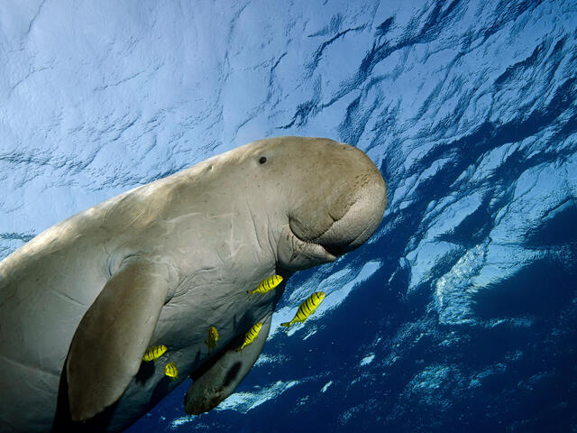

Dugongs are cousins of manatees and share a similar plump appearance, but have a dolphin fluke-like tail. And unlike manatees, which use freshwater areas, the dugong is strictly a marine mammal. Commonly known as "sea cows,"
Dugongs graze peacefully on sea grasses in shallow coastal waters of the Indian and western Pacific Oceans. There are still a considerable amount of them left in the world, about 100,000. They are still considered vulnerable due to how little they do.